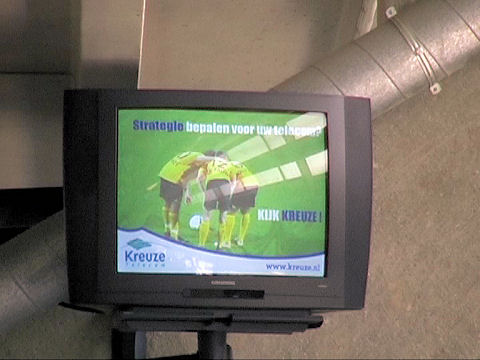
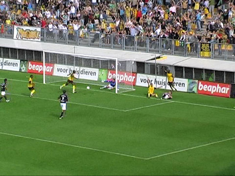
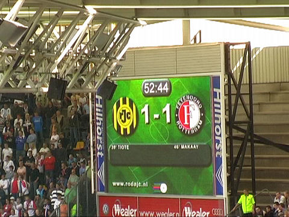

|
Roda JC - Feyenoord (1-3) 16 september 2007
|
Goed werk op zuid door in een extra tap-punt te voorzien.

Ook nieuw: TV's in de omloop.
Juist!
De 20 plussers staan op zuid.
Prima kopkans voor Matondo. Timmer redt echter met een mooie reflex.
Haverkamp fluit deze keer een redelijke partij...

.. met veel aandacht voor de talrijke "blessures".
Nieuwe aanwinst Hadouir legt de bal klaar voor een hoekschop. Vlaar van
Feyenoord
ligt geblesseerd langs de lijn.
De bal gaat al in eerste instantie duidelijk over de lijn...

... wat Tioté bij deze in tweede instantie nadrukkelijk bevestigt.
Roda JC - Feyenoord: 1-0, (40').

Even plassen en dan is het opeens 1-1 uit een penalty van Makaay, (47').
Voor de massochisten.
Foto by kind courtesy of http://www.sv-online.info
Roda verliest geleidelijk de controle. Het meer ervaren en duidelijk beter
georganiseerder Feyenoord dicteert de tweede helft.
Kanonschot van De Guzman: 1-2, (62').
De ontlading in het gastenvak.
Roda komt er totaal niet meer aan te pas en zo kan Feyenoord uitlopen naar een
1-3 score, De Guzman (70').
Niks aan te doen, Feyenoord is net iets volwassener. De punten moeten gehaald
worden tegen Excelsior en Willem II, met de nadruk op MOETEN!
Jammer, we hadden je een beter
verjaarscadeautje gegund....
De spelers die naar de Kickoff kwamen: Senden,
Matondo,
(foto: Dennis Richter).
Vandamme.
Rechts de jarige, daarnaast de jarigen van morgen en overmorgen.
Het komt goed met Roda dit seizoen......
Foto's vanuit Feyenoord-perspectief:
Feyenoord Foto Fansite EGO2
>>>
Fr-Fotopage
>>>
© Koempels Pleasure Dome
|